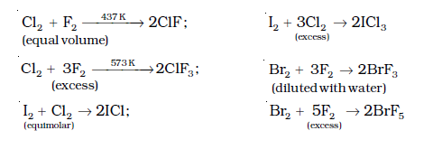
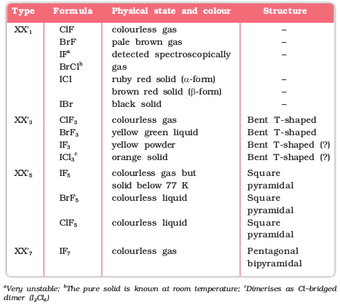
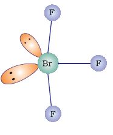

7.22 Interhalogen Compounds
When two different halogens react with each other, interhalogen compounds are formed. They can be assigned general compositions as XX′ , XX3′, XX5′ and XX7′ where X is halogen of larger size and X′ of smaller size and X is more electropositive than X′. As the ratio between radii of X and X′ increases, the number of atoms per molecule also increases. Thus, iodine (VII) fluoride should have maximum number of atoms as the ratio of radii between I and F should be maximum. That is why its formula is IF7 (having maximum number of atoms).
Preparation
The interhalogen compounds can be prepared by the direct combination or by the action of halogen on lower interhalogen compounds. The product formed depends upon some specific conditions, For e.g.,

Properties
Some properties of interhalogen compounds are given in Table 7.11.
Table 7.11: Some Properties of Interhalogen Compounds
These are all covalent molecules and are diamagnetic in nature. They are volatile solids or liquids at 298 K except ClF which is a gas. Their physical properties are intermediate between those of constituent halogens except that their m.p. and b.p. are a little higher than expected.
Their chemical reactions can be compared with the individual halogens. In general, interhalogen compounds are more reactive than halogens (except fluorine). This is because X–X′ bond in interhalogens is weaker than X–X bond in halogens except F–F bond. All these undergo hydrolysis giving halide ion derived from the smaller halogen and a hypohalite ( when XX′), halite ( when XX′3), halate (when XX′5) and perhalate (when XX′7) anion derived from the larger halogen.
Their molecular structures are very interesting which can be explained on the basis of VSEPR theory (Example 7.19). The XX3 compounds have the bent ‘T’ shape, XX5 compounds square pyramidal and IF7 has pentagonal bipyramidal structures (Table 7.11).
Example 7.19
Discuss the molecular shape of BrF3 on the basis of VSEPR theory.
Solution
The central atom Br has seven electrons in the valence shell. Three of these will form electronpair bonds with three fluorine atoms leaving behind four electrons. Thus, there are three bond pairs and two lone pairs. According to VSEPR theory, these will occupy the corners of a trigonal bipyramid. The two lone pairs will occupy the equatorial positions to minimise lone pair-lone pair and the bond pairlone pair repulsions which are greater than the bond pair-bond pair repulsions. In addition, the axial fluorine atoms will be bent towards the equatorial fluorine in order to minimise the lone-pair-lone pair repulsions. The shape would be that of a slightly bent 'T'.

Uses: These compounds can be used as non aqueous solvents. Interhalogen compounds are very useful fluorinating agents. ClF3 and BrF3 are used for the
production of UF6 in the enrichment of 235U.
U(s) + 3ClF3(l) → UF6(g) + 3ClF(g)